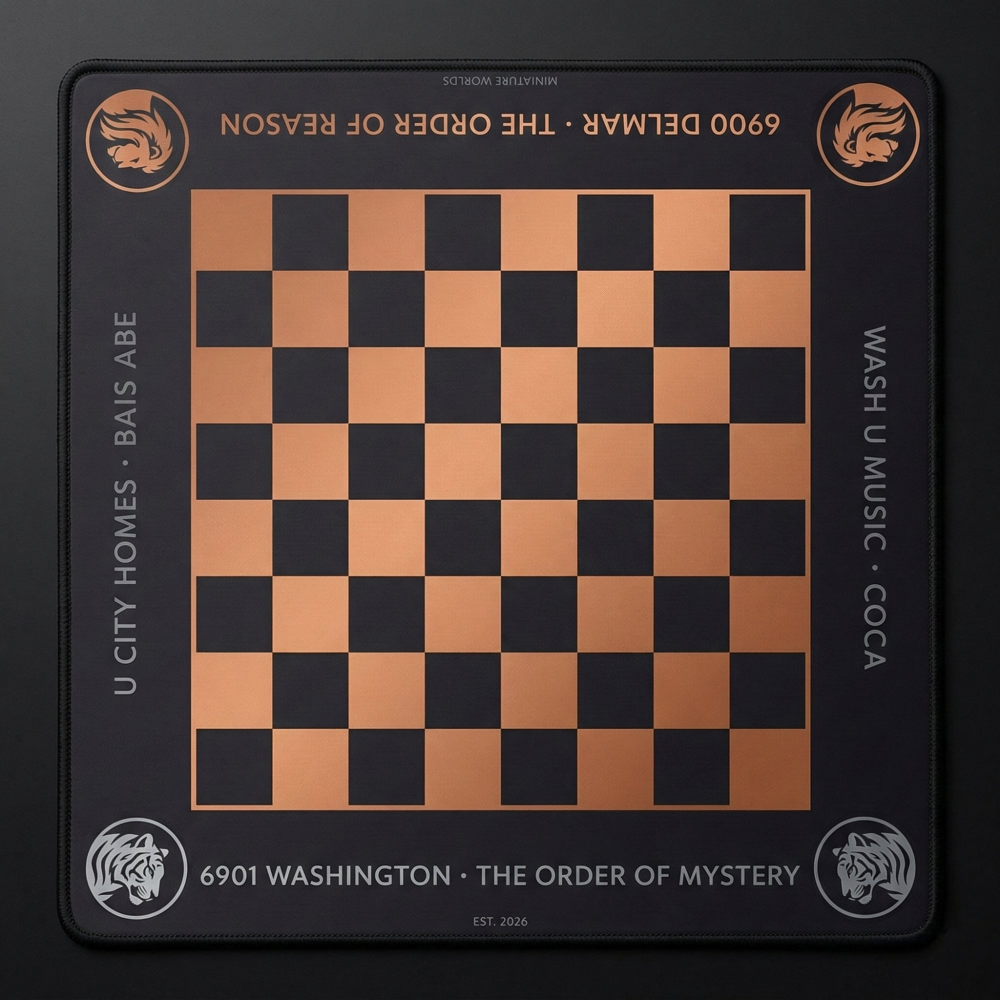
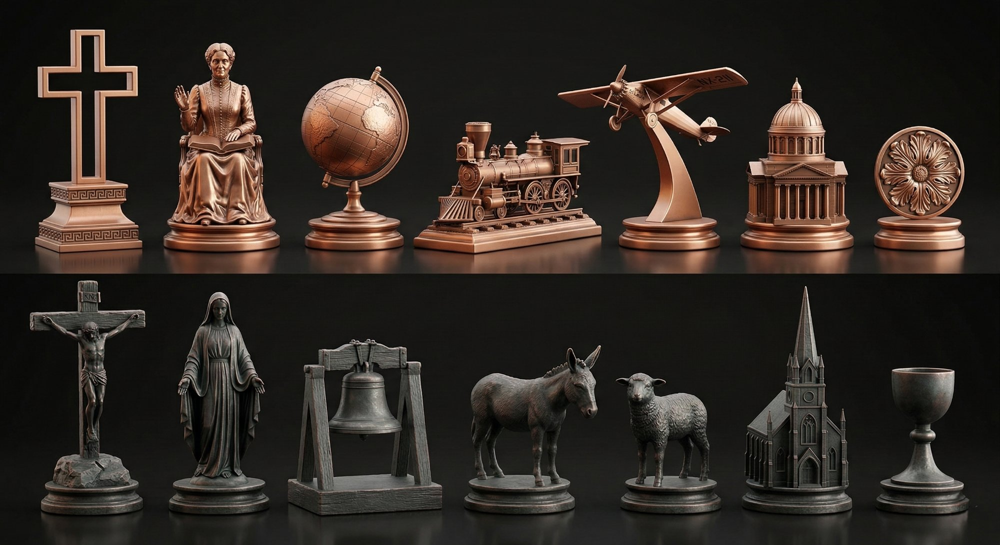
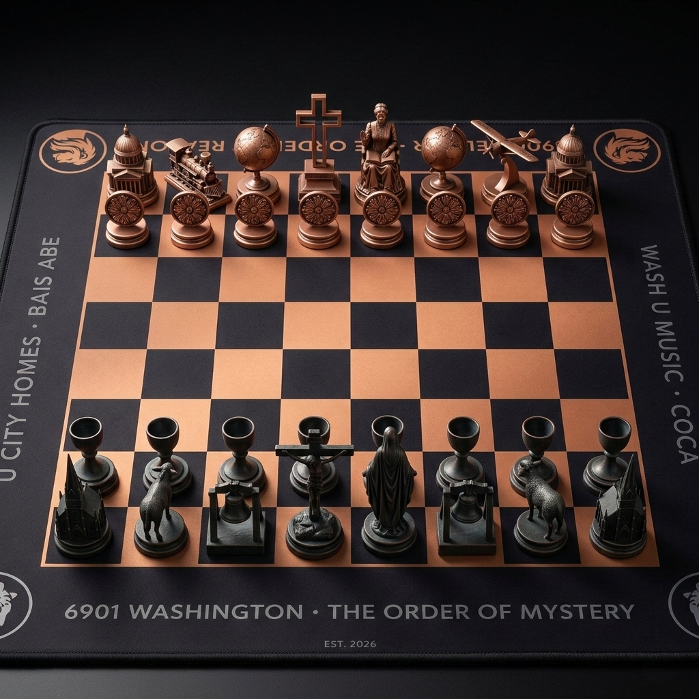

The Board



Every piece on one side has a counterpart on the other.
Each pair asks the same question differently.
The locomotive and the plane. The rosette and the chalice. The cross and the crucifix. Mary Baker Eddy and the Virgin Mary. Two buildings, two armies, one game.


